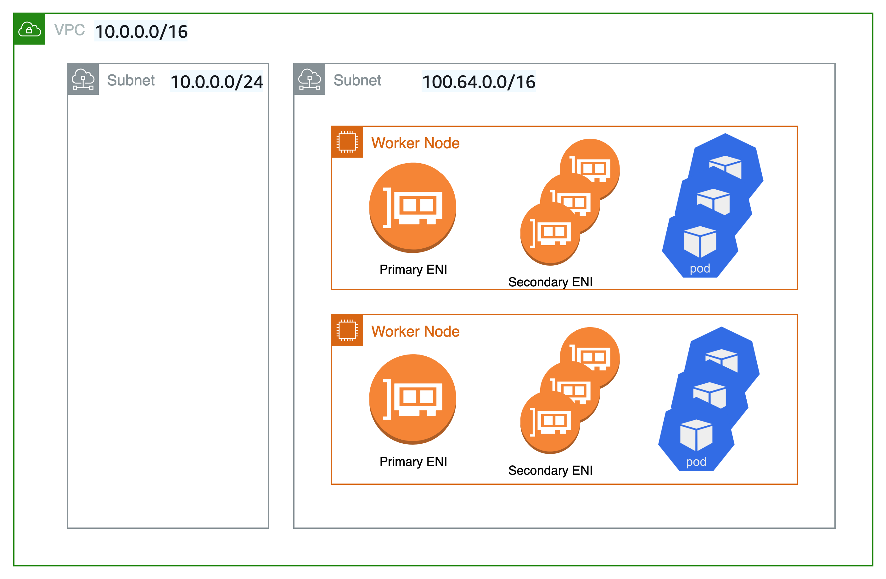

사용자 지정 네트워킹¶
기본적으로 Amazon VPC CNI는 기본 서브넷에서 선택한 IP 주소를 파드에 할당합니다. 기본 서브넷은 기본 ENI가 연결된 서브넷 CIDR이며, 일반적으로 노드/호스트의 서브넷입니다.
서브넷 CIDR이 너무 작으면 CNI가 파드에 할당하기에 충분한 보조 IP 주소를 확보하지 못할 수 있습니다. 이는 EKS IPv4 클러스터의 일반적인 문제입니다.
사용자 지정 네트워킹은 이 문제에 대한 한 가지 해결책입니다.
사용자 지정 네트워킹은 보조 VPC 주소 공간 (CIDR) 에서 노드 및 파드 IP를 할당하여 IP 고갈 문제를 해결합니다. 사용자 지정 네트워킹 지원은 Eniconfig 사용자 지정 리소스를 지원합니다. ENIConfig에는 파드가 속하게 될 보안 그룹과 함께 대체 서브넷 CIDR 범위 (보조 VPC CIDR에서 파밍) 가 포함되어 있습니다. 사용자 지정 네트워킹이 활성화되면 VPC CNI는 eniconfig에 정의된 서브넷에 보조 ENI를 생성합니다. CNI는 ENIConfig CRD에 정의된 CIDR 범위의 IP 주소를 파드에 할당합니다.
사용자 지정 네트워킹에서는 기본 ENI를 사용하지 않으므로, 노드에서 실행할 수 있는 최대 파드 수는 더 적다. 호스트 네트워크 파드는 기본 ENI에 할당된 IP 주소를 계속 사용합니다. 또한 기본 ENI는 소스 네트워크 변환을 처리하고 파드 트래픽을 노드 외부로 라우팅하는 데 사용됩니다.
예제 구성¶
사용자 지정 네트워킹은 보조 CIDR 범위에 유효한 VPC 범위를 허용하지만 CG-NAT 공간 (예: 100.64.0.0/10 또는 198.19.0.0/16) 의 CIDR (/16) 은 다른 RFC1918 범위보다 기업 환경에서 사용될 가능성이 적기 때문에 사용하는 것이 좋습니다. VPC에서 사용할 수 있는 허용 및 제한된 CIDR 블록 연결에 대한 자세한 내용은 VPC 설명서의 VPC 및 서브넷 크기 조정 섹션에서 IPv4 CIDR 블록 연결 제한을 참조하십시오.
아래 다이어그램에서 볼 수 있듯이 워커 노드의 기본 엘라스틱 네트워크 인터페이스 (ENI) 는 여전히 기본 VPC CIDR 범위 (이 경우 10.0.0.0/16) 를 사용하지만 보조 ENI는 보조 VPC CIDR 범위 (이 경우 100.64.0.0/16) 를 사용합니다. 이제 파드가 100.64.0.0/16 CIDR 범위를 사용하도록 하려면 사용자 지정 네트워킹을 사용하도록 CNI 플러그인을 구성해야 합니다. 여기에 설명된 대로 단계를 수행하면 됩니다.

CNI에서 사용자 지정 네트워킹을 사용하도록 하려면 AWS_VPC_K8S_CNI_CUSTOM_NETWORK_CFG 환경 변수를 true로 설정하십시오.
AWS_VPC_K8S_CNI_CUSTOM_Network_CFG=true인 경우, CNI는 ENIConfig에 정의된 서브넷의 파드 IP 주소를 할당한다. ENIConfig 사용자 지정 리소스는 파드가 스케줄링될 서브넷을 정의하는 데 사용됩니다.
apiVersion : crd.k8s.amazonaws.com/v1alpha1
kind : ENIConfig
metadata:
name: us-west-2a
spec:
securityGroups:
- sg-0dff111a1d11c1c11
subnet: subnet-011b111c1f11fdf11
ENIconfig 사용자 지정 리소스를 생성할 때 새 워커 노드를 생성하고 기존 노드를 비워야 합니다. 기존 워커 노드와 파드는 영향을 받지 않습니다.
권장 사항¶
사용자 지정 네트워킹 이용을 권장하는 경우¶
IPv4가 고갈되고 있고 아직 IPv6를 사용할 수 없는 경우 사용자 지정 네트워킹을 고려하는 것이 좋습니다. Amazon EKS는 RFC6598 공간을 지원하므로 RFC1918 문제 소모 문제 이상으로 파드를 확장할 수 있습니다.사용자 지정 네트워킹과 함께 Prefix 위임을 사용하여 노드의 파드 밀도를 높이는 것을 고려해 보십시오.
보안 그룹 요구 사항이 다른 다른 네트워크에서 Pod를 실행해야 하는 보안 요구 사항이 있는 경우 사용자 지정 네트워킹을 고려할 수 있습니다. 사용자 지정 네트워킹이 활성화되면 파드는 Eniconfig에 정의된 대로 노드의 기본 네트워크 인터페이스와 다른 서브넷 또는 보안 그룹을 사용합니다.
사용자 지정 네트워킹은 여러 EKS 클러스터 및 애플리케이션을 배포하여 온프레미스 데이터 센터 서비스를 연결하는 데 가장 적합한 옵션입니다. Amazon Elastic Load Balancing 및 NAT-GW와 같은 서비스를 위해 VPC에서 EKS로 액세스할 수 있는 프라이빗 주소 (RFC1918) 의 수를 늘리는 동시에 여러 클러스터에서 파드에 라우팅할 수 없는 CG-NAT 공간을 사용할 수 있습니다. 트랜짓 게이트웨이 및 공유 서비스 VPC (고가용성을 위한 여러 가용영역에 걸친 NAT 게이트웨이 포함) 를 사용한 사용자 지정 네트워킹을 통해 확장 가능하고 예측 가능한 트래픽 흐름을 제공할 수 있습니다. 이 블로그 게시물 에서는 사용자 지정 네트워킹을 사용하여 EKS Pod를 데이터 센터 네트워크에 연결하는 데 가장 권장되는 방법 중 하나인 아키텍처 패턴을 설명합니다.
사용자 지정 네트워킹 이용을 권장하지 않는 경우¶
IPv6 구현 준비 완료¶
사용자 지정 네트워킹은 IP 고갈 문제를 완화할 수 있지만 추가 운영 오버헤드가 필요합니다. 현재 이중 스택 (IPv4/IPv6) VPC를 배포 중이거나 계획에 IPv6 지원이 포함된 경우 IPv6 클러스터를 대신 구현하는 것이 좋습니다. IPv6 EKS 클러스터를 설정하고 앱을 마이그레이션할 수 있습니다. IPv6 EKS 클러스터에서는 쿠버네티스와 파드 모두 IPv6 주소를 얻고 IPv4 및 IPv6 엔드포인트 모두와 송수신할 수 있습니다. IPv6 EKS 클러스터 실행에 대한 모범 사례를 검토하십시오.
고갈된 CG-NAT 공간¶
또한 현재 CG-NAT 공간의 CIDR을 사용하고 있거나 보조 CIDR을 클러스터 VPC와 연결할 수 없는 경우 대체 CNI 사용과 같은 다른 옵션을 탐색해야 할 수도 있습니다. 상용 지원을 받거나 사내 지식을 보유하여 오픈소스 CNI 플러그인 프로젝트를 디버깅하고 패치를 제출하는 것이 좋습니다. 자세한 내용은 대체 CNI 플러그인 사용 설명서를 참조하십시오.
프라이빗 NAT 게이트웨이 사용¶
Amazon VPC는 이제 프라이빗 NAT 게이트웨이 기능을 제공합니다. Amazon의 프라이빗 NAT 게이트웨이를 사용하면 프라이빗 서브넷의 인스턴스를 CIDR이 겹치는 다른 VPC 및 온프레미스 네트워크에 연결할 수 있습니다. 이 블로그 게시물에 설명된 방법을 활용하여 프라이빗 NAT 게이트웨이를 사용하여 CIDR 중복으로 인한 EKS 워크로드의 통신 문제를 해결하는 것을 고려해 보십시오. 이는 고객이 제기한 중대한 불만 사항입니다. 맞춤형 네트워킹만으로는 중복되는 CIDR 문제를 해결할 수 없으며 구성 문제가 가중됩니다.
이 블로그 게시물 구현에 사용된 네트워크 아키텍처는 Amazon VPC 설명서의 중복 네트워크 간 통신 활성화에 있는 권장 사항을 따릅니다. 이 블로그 게시물에서 설명한 것처럼 프라이빗 NAT 게이트웨이를 RFC6598 주소와 함께 사용하여 고객의 프라이빗 IP 고갈 문제를 관리할 수 있는 방법을 모색할 수 있습니다. EKS 클러스터, 워커 노드는 라우팅이 불가능한 100.64.0.0/16 VPC 보조 CIDR 범위에 배포되는 반면, 사설 NAT 게이트웨이인 NAT 게이트웨이는 라우팅 가능한 RFC1918 CIDR 범위에 배포됩니다. 이 블로그에서는 라우팅이 불가능한 CIDR 범위가 겹치는 VPC 간의 통신을 용이하게 하기 위해 트랜짓 게이트웨이를 사용하여 VPC를 연결하는 방법을 설명합니다. VPC의 라우팅 불가능한 주소 범위에 있는 EKS 리소스가 주소 범위가 겹치지 않는 다른 VPC와 통신해야 하는 사용 사례의 경우 고객은 VPC 피어링을 사용하여 이런 VPC를 상호 연결할 수 있습니다. 이제 VPC 피어링 연결을 통한 가용영역 내의 모든 데이터 전송이 무료이므로 이 방법을 사용하면 비용을 절감할 수 있습니다.

노드 및 파드를 위한 고유한 네트워크¶
보안상의 이유로 노드와 파드를 특정 네트워크로 격리해야 하는 경우, 더 큰 보조 CIDR 블록 (예: 100.64.0.0/8) 의 서브넷에 노드와 파드를 배포하는 것이 좋습니다. VPC에 새 CIDR을 설치한 후에는 보조 CIDR을 사용하여 다른 노드 그룹을 배포하고 원래 노드를 드레인하여 파드를 새 워커 노드에 자동으로 재배포할 수 있습니다. 이를 구현하는 방법에 대한 자세한 내용은 이 블로그 게시물을 참조하십시오.
아래 다이어그램에 표시된 설정에서는 사용자 지정 네트워킹이 사용되지 않습니다. 대신 쿠버네티스 워커 노드는 VPC의 보조 VPC CIDR 범위 (예: 100.64.0.0/10) 에 속하는 서브넷에 배포됩니다. EKS 클러스터를 계속 실행할 수 있지만 (컨트롤 플레인은 원래 서브넷에 유지됨), 노드와 파드는 보조 서브넷으로 이동합니다. 이는 VPC에서 IP 고갈의 위험을 완화하기 위한 흔하지는 않지만 또 다른 기법입니다.새 워커 노드에 파드를 재배포하기 전에 기존 노드를 비우는 것이 좋습니다.

가용영역 레이블을 사용한 구성 자동화¶
Kubernetes를 활성화하여 워커 노드 가용영역 (AZ) 에 해당하는 eniConfig를 자동으로 적용할 수 있습니다.
쿠버네티스는 워커 노드에 topology.kubernetes.io/zone 태그를 자동으로 추가합니다. Amazon EKS는 AZ당 보조 서브넷 (대체 CIDR) 이 하나뿐인 경우 가용영역을 ENI 구성 이름으로 사용할 것을 권장합니다. 참고로 failure-domain.beta.kubernetes.io/zone 태그는 더 이상 사용되지 않으며 topology.kubernetes.io/zone 태그로 대체되었습니다.
name필드를 VPC의 가용영역으로 설정합니다.- 다음 명령을 사용하여 자동 구성을 활성화합니다.
가용영역당 보조 서브넷이 여러 개 있는 경우, 특정 ENI_CONFIG_LABEL_DEF를 생성해야 합니다. ENI_CONFIG_LABEL_DEF를 k8s.amazonaws.com/eniConfig로 구성하고 k8s.amazonaws.com/eniConfig=us-west-2a-subnet-1 및 k8s.amazonaws.com/eniConfig=us-west-2a-subnet-2 같은 사용자 정의 eniConfig 이름으로 노드를 레이블링하는 것을 고려할 수 있습니다.
보조 네트워킹 구성 시 파드 교체¶
사용자 지정 네트워킹을 활성화해도 기존 노드는 수정되지 않습니다. 맞춤형 네트워킹은 파괴적인 조치입니다. 사용자 지정 네트워킹을 활성화한 후 클러스터의 모든 워커 노드를 순차적으로 교체하는 대신, 워커 노드가 프로비저닝되기 전에 사용자 지정 네트워킹이 가능하도록 Lambda 함수를 호출하는 사용자 지정 리소스로 EKS 시작 안내서의 AWS CloudFormation 템플릿을 업데이트하여 환경 변수로 aws-node 데몬셋을 업데이트하는 것이 좋습니다.
사용자 지정 CNI 네트워킹 기능으로 전환하기 전에 클러스터에 파드를 실행하는 노드가 있는 경우, 파드를 차단하고 드레이닝 하여 파드를 정상적으로 종료한 다음 노드를 종료해야 합니다. ENIConfig 레이블 또는 주석과 일치하는 새 노드만 사용자 지정 네트워킹을 사용하므로 이런 새 노드에 스케줄링된 파드에는 보조 CIDR의 IP를 할당받을 수 있습니다.
노드당 최대 파드 수 계산¶
노드의 기본 ENI는 더 이상 Pod IP 주소를 할당하는 데 사용되지 않으므로 특정 EC2 인스턴스 유형에서 실행할 수 있는 Pod 수가 감소합니다. 이 제한을 우회하기 위해 사용자 지정 네트워킹과 함께 Prefix 할당을 사용할 수 있습니다. Prefix를 할당하면 보조 ENI에서 각 보조 IP가 /28 Prefix로 대체됩니다.
사용자 지정 네트워킹이 있는 m5.large 인스턴스의 최대 파드 수를 고려해봅시다.
Prefix를 할당하지 않고 실행할 수 있는 최대 파드 수는 29개입니다.
- ((3 ENIs - 1) * (10 secondary IPs per ENI - 1)) + 2 = 20
프리픽스 어태치먼트를 활성화하면 파드의 수가 290개로 늘어납니다.
- (((3 ENIs - 1) * ((10 secondary IPs per ENI - 1) * 16)) + 2 = 290
하지만 인스턴스의 가상 CPU 수가 매우 적기 때문에 max-pod를 290이 아닌 110으로 설정하는 것이 좋습니다. 더 큰 인스턴스의 경우 EKS는 최대 파드 값을 250으로 설정할 것을 권장합니다. 더 작은 인스턴스 유형 (예: m5.large) 에 Prefix 첨부 파일을 사용할 경우 IP 주소보다 훨씬 먼저 인스턴스의 CPU 및 메모리 리소스가 고갈될 수 있습니다.
Info
CNI Prefix가 ENI에 /28 Prefix를 할당할 때는 연속된 IP 주소 블록이어야 합니다. Prefix가 생성되는 서브넷이 고도로 분할된 경우 Prefix 연결에 실패할 수 있습니다. 클러스터용 전용 VPC를 새로 만들거나 서브넷에 Prefix 첨부 전용으로 CIDR 세트를 예약하여 이런 문제가 발생하지 않도록 할 수 있습니다. 이 주제에 대한 자세한 내용은 서브넷 CIDR 예약을 참조하십시오.
CG-NAT 공간의 기존 사용 현황 파악¶
사용자 지정 네트워킹을 사용하면 IP 소모 문제를 완화할 수 있지만 모든 문제를 해결할 수는 없습니다. 클러스터에 이미 CG-NAT 공간을 사용하고 있거나 단순히 보조 CIDR을 클러스터 VPC에 연결할 수 없는 경우에는 대체 CNI를 사용하거나 IPv6 클러스터로 이동하는 등의 다른 옵션을 살펴보는 것이 좋습니다.